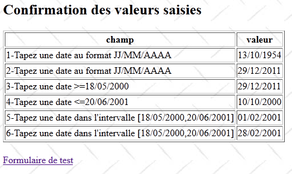

14. Exemple 11 – Conversion et validation de dates
La nouvelle application présente la saisie de dates :
 |
- en [1], le formulaire de saisie
- en [2], la réponse renvoyée
L'application a un fonctionnement similaire à celui de la saisie des nombres entiers aussi ne commenterons-nous que les points qui diffèrent.
14.1. Le projet Netbeans
Le projet Netbeans est le suivant :
 |
- en [1], les vues de l'application
- [Accueil.JSP] : la page d'accueil
- [FormDate.JSP] : le formulaire de saisie
- [ConfirmationFormDate.JSP] : la page de confirmation
- en [2], le fichier des messages [messages.properties] et le fichier de configuration principal de Struts
- en [3] :
- [FormDate.java] : l'action qui affiche et traite le formulaire
- [FormDate-validation.xml] : les règles de validation de l'action [FormDate]. Ce fichier délègue ces validations au modèle.
- [FormDateModel] : le modèle de l'action [FormDate]
- [ FormDateModel-validation.xml] : les règles de validation du modèle
- [FormDateModel.properties] : le fichier des messages du modèle
- [example.xml] : fichier de configuration secondaire de Struts
14.2. La configuration du projet
Le projet est principalement configuré par le fichier [example.xml] suivant :
<?xml version="1.0" encoding="UTF-8" ?>
<!DOCTYPE struts PUBLIC
"-//Apache Software Foundation//DTD Struts Configuration 2.0//EN"
"http://struts.apache.org/dtds/struts-2.0.dtd">
<struts>
<package name="example" namespace="/example" extends="struts-default">
<action name="Accueil">
<result name="success">/example/Accueil.JSP</result>
</action>
<action name="FormDate" class="example.FormDate">
<result name="input">/example/FormDate.JSP</result>
<result name="cancel" type="redirect">/example/Accueil.JSP</result>
<result name="success">/example/ConfirmationFormDate.JSP</result>
</action>
</package>
</struts>
Il est analogue à celui qui a été étudié pour la saisie des nombres entiers.
14.3. Les fichiers des messages
Le fichier [messages.properties] est le suivant :
Accueil.titre=Accueil
Accueil.message=Struts 2 - Conversions et validations
Accueil.FormDate=Saisie de dates
Form.titre=Conversions et validations
FormDate.message=Struts 2 - Conversion et validation de dates
FormDate.conseil=Tapez les dates au format JJ/MM/AAAA comme dans 12/10/2008
Form.submitText=Valider
Form.cancelText=Annuler
Form.clearModel=Raz mod\u00e8le
Confirmation.titre=Confirmation
Confirmation.message=Confirmation des valeurs saisies
Confirmation.champ=champ
Confirmation.valeur=valeur
Confirmation.lien=Formulaire de test
xwork.default.invalid.fieldvalue=Valeur invalide pour le champ "{0}".
Le fichier [FormDateModel.properties] est le suivant :
date.format={0,date,dd/MM/yyyy}
date1.prompt=1-Tapez une date au format JJ/MM/AAAA
date1.error=Date erron\u00E9e
date2.prompt=2-Tapez une date au format JJ/MM/AAAA
date2.error=Date erron\u00E9e
date3.prompt=3-Tapez une date >=18/05/2000
date3.error=Date erron\u00E9e
date4.prompt=4-Tapez une date <=20/06/2001
date4.error=Date erron\u00E9e
date5.prompt=5-Tapez une date dans l''intervalle [18/05/2000,20/06/2001]
date5.error=Date errron\u00E9e
date6.prompt=6-Tapez une date dans l''intervalle [18/05/2000,20/06/2001]
date6.error=Date errron\u00E9e
La ligne 1 joue un rôle important. Nous y reviendrons.
14.4. Le formulaire de saisie
La vue [FormDate.JSP] est la suivante :
<%@ page contentType="text/html; charset=UTF-8" pageEncoding="UTF-8"%>
<%@ taglib prefix="s" uri="/struts-tags" %>
<html>
<head>
<title><s:text name="Form.titre"/></title>
<s:head/>
</head>
<body background="<s:url value="/ressources/standard.jpg"/>">
<h2><s:text name="FormDate.message"/></h2>
<h4><s:text name="FormDate.conseil"/></h4>
<s:form name="formulaire" action="FormDate">
<s:textfield name="date1" key="date1.prompt"/>
<s:textfield name="date2" key="date2.prompt" value="%{#parameters['date2']!=null ? #parameters['date2'] : date2==null ? '' :getText('date.format',{date2})}"/>
<s:textfield name="date3" key="date3.prompt" value="%{#parameters['date3']!=null ? #parameters['date3'] : date3==null ? '' :getText('date.format',{date3})}"/>
<s:textfield name="date4" key="date4.prompt" value="%{#parameters['date4']!=null ? #parameters['date4'] : date4==null ? '' :getText('date.format',{date4})}"/>
<s:textfield name="date5" key="date5.prompt" value="%{#parameters['date5']!=null ? #parameters['date5'] : date5==null ? '' :getText('date.format',{date5})}"/>
<s:textfield name="date6" key="date6.prompt"/>
<s:submit key="Form.submitText" method="execute"/>
</s:form>
<br/>
<s:url id="URL" action="FormDate" method="cancel"/>
<s:a href="%{URL}"><s:text name="Form.cancelText"/></s:a>
<br/>
<s:url id="URL" action="FormDate" method="clearModel"/>
<s:a href="%{URL}"><s:text name="Form.clearModel"/></s:a>
</body>
</html>
Les lignes 13 à 18 sont les six zones de saisie de dates. Les champs date2 à date5 ont un attribut value complexe, le même que pour la saisie des nombres réels. Les mêmes difficultés ayant été rencontrées, on les a résolues de la même façon.
14.5. La vue de confirmation
La vue de confirmation [ConfirmationFormDate.JSP] est la suivante :
 |
Son code est le suivant :
<%@ page contentType="text/html; charset=UTF-8" pageEncoding="UTF-8"%>
<%@ taglib prefix="s" uri="/struts-tags" %>
<html>
<head>
<title><s:text name="Confirmation.titre"/></title>
<s:head/>
</head>
<body background="<s:url value="/ressources/standard.jpg"/>">
<h2><s:text name="Confirmation.message"/></h2>
<table border="1">
<tr>
<th><s:text name="Confirmation.champ"/></th>
<th><s:text name="Confirmation.valeur"/></th>
</tr>
<tr>
<td><s:text name="date1.prompt"/></td>
<td><s:text name="date1"/></td>
</tr>
<tr>
<td><s:text name="date2.prompt"/></td>
<td>
<s:text name="date.format">
<s:param value="date2"/>
</s:text>
</td>
</tr>
<tr>
<td><s:text name="date3.prompt"/></td>
<td>
<s:text name="date.format">
<s:param value="date3"/>
</s:text>
</td>
</tr>
<tr>
<td><s:text name="date4.prompt"/></td>
<td>
<s:text name="date.format">
<s:param value="date4"/>
</s:text>
</td>
</tr>
<tr>
<td><s:text name="date5.prompt"/></td>
<td>
<s:text name="date.format">
<s:param value="date5"/>
</s:text>
</td>
</tr>
<tr>
<td><s:text name="date6.prompt"/></td>
<td><s:text name="date6"/></td>
</tr>
</table>
<br/>
<s:url id="URL" action="FormDate!input"/>
<s:a href="%{URL}"><s:text name="Confirmation.lien"/></s:a>
</body>
</html>
La vue [ConfirmationFormDate.JSP] se contente d'afficher le modèle [FormDateModel]. Les lignes 47-49 montrent l'affichage d'une date. On veut que cet affichage tienne compte d'un format de date. Pour cela, on utilise la balise <s:text> qu'on avait utilisée jusque là pour l'internationalisation de l'application.
Ici, la clé de message utilisée est date.format. Cette clé est trouvée dans le fichier [FormDateModel.properties] :
date.format={0,date,dd/MM/yyyy}
La valeur associée à la clé n'est pas ici un message, mais un format d'affichage :
- 0 est un paramètre représentant la valeur à afficher. Ici ce sera le champ date5 du modèle.
- date représente une date. Précédemment, on avait number pour un nombre.
- dd/MM/yyyy représente le format de la date. Ici, on le veut sous la forme jj/mm/aaaa. Le format Java qui convient est dd/MM/yyyy (d : day, M : Month, y : year)
La balise
<s:text name="date.format">
<s:param value="date5"/>
</s:text>
fait afficher le message {0, date, dd/MM/yyyy} où le paramètre date5 (ligne 2) viendra remplacer le paramètre 0 du format. Ainsi, le modèle date5 sera affiché au format jj/mm/aaaa.
14.6. Le modèle [FormDateModel]
Les champs date1 à date6 du formulaire [FormDate.JSP] sont injectés dans le modèle [FormDateModel] suivant :
package example;
import java.util.Date;
public class FormDateModel {
// constructeur sans paramètre
public FormDateModel() {
}
// champs
private String date1;
private Date date2 = new Date();
private Date date3 = new Date();
private Date date4;
private Date date5;
private String date6;
// raz modèle
public void clearModel() {
date1 = null;
date2 = null;
date3 = null;
date4 = null;
date5 = null;
date6 = null;
}
// getters et setters
...
}
- les champs date1 et date6 sont de type String
- les autres champs sont de type Date
14.7. La validation du modèle
La validation du modèle est contrôlée par deux fichiers : [FormDate-validation.xml] et [FormDateModel-validation.xml].
Le fichier [FormDate-validation.xml] délègue les validations à [FormDateModel-validation.xml] :
<!--
<!DOCTYPE validators PUBLIC "-//OpenSymphony Group//XWork Validator 1.0.2//
EN" "http://www.opensymphony.com/xwork/xwork-validator-1.0.2.dtd">
-->
<!DOCTYPE validators PUBLIC "-//OpenSymphony Group//XWork Validator 1.0.2//
EN" "http://localhost:8084/exemple-10/example/xwork-validator-1.0.2.dtd">
<validators>
<field name="model" >
<field-validator type="visitor">
<param name="appendPrefix">false</param>
<message/>
</field-validator>
</field>
</validators>
Nous avons déjà rencontré ce fichier.
Le fichier [FormDateModel-validation.xml] contient les règles de validation suivantes :
<!--
<!DOCTYPE validators PUBLIC "-//OpenSymphony Group//XWork Validator 1.0.2//
EN" "http://www.opensymphony.com/xwork/xwork-validator-1.0.2.dtd">
-->
<!DOCTYPE validators PUBLIC "-//OpenSymphony Group//XWork Validator 1.0.2//
EN" "http://localhost:8084/exemple-11/example/xwork-validator-1.0.2.dtd">
<validators>
<field name="date1" >
<field-validator type="requiredstring" short-circuit="true">
<message key="date1.error"/>
</field-validator>
<field-validator type="regex" short-circuit="true">
<param name="expression">^\d{2}/\d{2}/\d{4}$</param>
<param name="trim">true</param>
<message key="date1.error"/>
</field-validator>
</field>
<field name="date2" >
<field-validator type="required" short-circuit="true">
<message key="date2.error"/>
</field-validator>
<field-validator type="conversion" short-circuit="true">
<message key="date2.error"/>
</field-validator>
</field>
<field name="date3" >
<field-validator type="required" short-circuit="true">
<message key="date2.error"/>
</field-validator>
<field-validator type="conversion" short-circuit="true">
<message key="date3.error"/>
</field-validator>
<field-validator type="date" short-circuit="true">
<param name="min">18/05/2000</param>
<message key="date3.error"/>
</field-validator>
</field>
<field name="date4" >
<field-validator type="required" short-circuit="true">
<message key="date2.error"/>
</field-validator>
<field-validator type="conversion" short-circuit="true">
<message key="date4.error"/>
</field-validator>
<field-validator type="date" short-circuit="true">
<param name="max">20/06/2001</param>
<message key="date4.error"/>
</field-validator>
</field>
<field name="date5" >
<field-validator type="required" short-circuit="true">
<message key="date2.error"/>
</field-validator>
<field-validator type="conversion" short-circuit="true">
<message key="date5.error"/>
</field-validator>
<field-validator type="date" short-circuit="true">
<param name="min">18/05/2000</param>
<param name="max">20/06/2001</param>
<message key="date5.error"/>
</field-validator>
</field>
<field name="date6" >
<field-validator type="requiredstring" short-circuit="true">
<message key="date6.error"/>
</field-validator>
<field-validator type="regex" short-circuit="true">
<param name="expression">^\d{2}/\d{2}/\d{4}$</param>
<param name="trim">true</param>
<message key="date6.error"/>
</field-validator>
</field>
</validators>
- la règle des lignes 11-20 vérifie que le champ de saisie date1 suit le modèle d'une expression régulière représentant une date de la forme jj/mm/aaaa. On notera qu'on vérifie que la chaîne a la forme d'une date mais qu'on ne vérifie pas que c'est une date valide. Ainsi 29/02/2011 a la forme d'une date mais n'est pas une date valide.
- la règle des lignes 22-29 vérifie que le champ de saisie date2 est une date valide.
- la règle des lignes 31-42 vérifie que le champ de saisie date3 est une date valide >=18/05/2000
- la règle des lignes 44-55 vérifie que le champ de saisie date4 est une date valide <=20/06/2001.
- la règle des lignes 57-69 vérifie que le champ de saisie date5 est une date valide <=20/06/2001 et >=18/05/2000.
- la règle des lignes 71-80 vérifie que le champ date6 a la forme d'une date jj/mm/aaaa.
Une fois le fichier [FormDateModel-validation.xml] exploité par l'intercepteur de validation, celui-ci fait exécuter la méthode validate de l'action [FormDate] si elle existe. Nous allons la présenter en même temps que la totalité de l'action.
14.8. L'action [FormDate]
L'action [FormDate] est la suivante :
package example;
import com.opensymphony.xwork2.ActionSupport;
import com.opensymphony.xwork2.ModelDriven;
import java.text.SimpleDateFormat;
import java.util.Date;
import java.util.Map;
import org.apache.struts2.interceptor.SessionAware;
import org.apache.struts2.interceptor.validation.SkipValidation;
public class FormDate extends ActionSupport implements ModelDriven, SessionAware {
// constructeur sans paramètre
public FormDate() {
}
// modèle de l'action
public Object getModel() {
if (session.get("model") == null) {
session.put("model", new FormDateModel());
}
return session.get("model");
}
@SkipValidation
public String clearModel() {
// raz du modèle
((FormDateModel) getModel()).clearModel();
// résultat
return INPUT;
}
public String cancel() {
// on nettoie le modèle
((FormDateModel) getModel()).clearModel();
// résultat
return "cancel";
}
// SessionAware
Map<String, Object> session;
public void setSession(Map<String, Object> session) {
this.session = session;
}
// validation
@Override
public void validate() {
// formatage des dates
SimpleDateFormat formateurDate = new SimpleDateFormat("dd/MM/yyyy");
formateurDate.setLenient(false);
// saisie date1 valide ?
if (getFieldErrors().get("date1") == null) {
// vérification validité date
try {
formateurDate.parse(((FormDateModel) getModel()).getDate1());
} catch (Exception e) {
addFieldError("date1", getText("date1.error"));
}
}
// saisie date6 valide ?
if (getFieldErrors().get("date6") == null) {
Date d = null;
try {
// vérification validité date
d = formateurDate.parse(((FormDateModel) getModel()).getDate6());
// vérification bornes
if (d.after(formateurDate.parse("20/06/2001")) || d.before(formateurDate.parse("18/05/2000"))) {
addFieldError("date6", getText("date6.error"));
return;
}
} catch (Exception e) {
addFieldError("date6", getText("date6.error"));
return;
}
}
}
}
L'action [FormDate] est bâtie sur le même modèle que l'action [FormInt]. Nous ne commenterons que la méthode validate. On rappelle que la méthode validate est exécutée après exploitation du fichier de validation [FormDateModel-validation.xml] et avant l'exécution de la méthode execute.
- la méthode validate complète la validation des dates date1 et date6. Le fichier de validation [FormDateModel-validation.xml] avait vérifié que les chaînes saisies avaient la forme d'une date. On vérifie maintenant que ce sont bien des dates valides. On rappelle également que date1 et date6 étaient les deux seuls champs du modèle à être de type String.
- ligne 50 : on crée un format de date jj/mm/aaaa afin de vérifier que les chaînes de ce type sont bien des dates valides.
- ligne 51 : setLenient(false) permet d'éviter que la date invalide 32/01/2012 soit interprétée comme la date valide 01/02/2012.
- ligne 53 : on ne valide date1 que si les précédentes validations n'ont pas eu d'erreurs sur ce champ.
- ligne 56 : on vérifie que date1 est une date valide au format jj/mm/aaaa.
- ligne 58 : si ce n'est pas le cas, on associe un message d'erreur au champ date1.
- ligne 62 : on ne valide date6 que si ce champ a passé les précédentes validations.
- ligne 66 : on vérifie que date6 est une date valide
- ligne 68 : si date6 est <18/05/2000 ou date6>20/06/2001 alors date6 est incorrect.
14.9. Derniers détails
Le formulaire précédent présente des failles comme le montre l'exemple suivant :
 |
- en [1], on rentre une date invalide
- en [2], elle a été acceptée. Seuls les premiers caractères jj/mm/aaaa ont été pris en compte.
Les champs date2 à date5 qui sont liés à des modèles de type Date ont tous ce problème. Là encore, peut-être ai-je raté quelque chose dans la documentation. Les champs date1 et date6 qui sont liés à des modèles de type String n'ont pas ce problème.